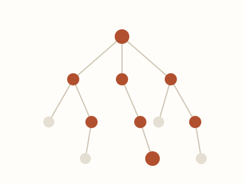

Fleet of Agents: Coordinated Problem Solving with Large Language Models
ICML 2025 * equal contribution
A group of LLM agents explore a problem as a dynamic tree search, using genetic-type particle filtering to decide which branches deserve more compute.